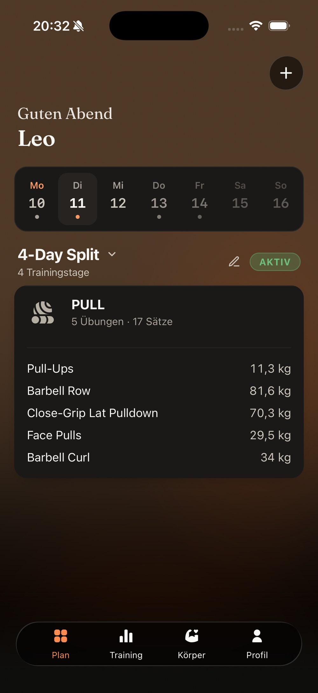
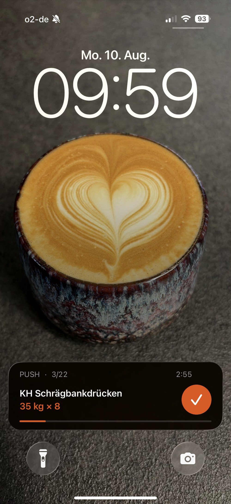

Ein Trainings-Tracker für Leute, die ihren Plan schon haben. Alles bleibt auf deinem iPhone. Keine Anmeldung, keine Werbung, keine monatliche Rechnung.
Im App Store laden

Aktuelle Übung, deine Werte vom letzten Mal, Fortschritt. Den Satz hakst du direkt dort ab, ohne die App zu öffnen. Das ganze Training über.
Bei Zeitübungen läuft ein Countdown rückwärts und es piept am Ende. Planke, Laufband, Intervalle. Kein Blick aufs Display nötig.
Kein Freemium, keine versteckten Kosten. Wenn es dir was bringt, empfiehl es weiter. Das reicht.
Im App Store ladenJa. Kein Abo, keine Käufe in der App, keine Funktion hinter einer Bezahlschranke. Es gibt auch keine kostenpflichtige Version, auf die später umgestellt wird.
Auf deinem iPhone, sonst nirgends. Es gibt keinen Server, an den etwas gesendet wird, und kein Konto, das etwas speichern könnte. Das ist der Grund, warum es keine Anmeldung gibt: es gäbe nichts anzumelden.
Du exportierst deine Daten als Datei und liest sie auf dem neuen Gerät wieder ein. Das geht im Profil, dauert ein paar Sekunden und braucht keine Cloud.
Die App erinnert dich von selbst daran, wenn die letzte Sicherung länger her ist.
Ja, als normalen Text. Du teilst ihn über jede App, die Text verschicken kann, und der andere fügt ihn mit einem Tippen ein. Deine persönlichen Notizen bleiben dabei außen vor.
Nein. Nicht weil es technisch unmöglich wäre, sondern weil ich die App allein baue, neben einem Vollzeitjob. Zwei Plattformen heißen zweimal testen, zweimal pflegen, zweimal Fehler suchen. Ich mache lieber eine Sache richtig als zwei halb.
Weil gymLog für Leute gebaut ist, die schon wissen, was sie tun. Ein Plan, der zu dir passt, kommt von dir oder von jemandem, der dich kennt — nicht aus einer Liste in einer App.